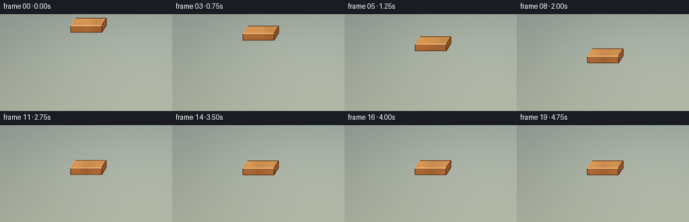
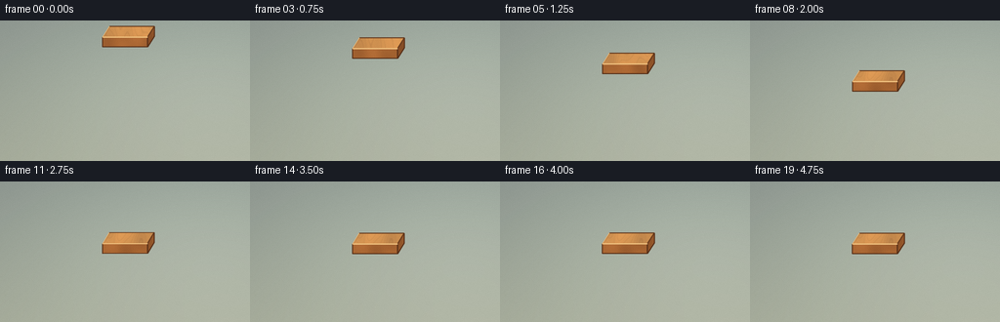
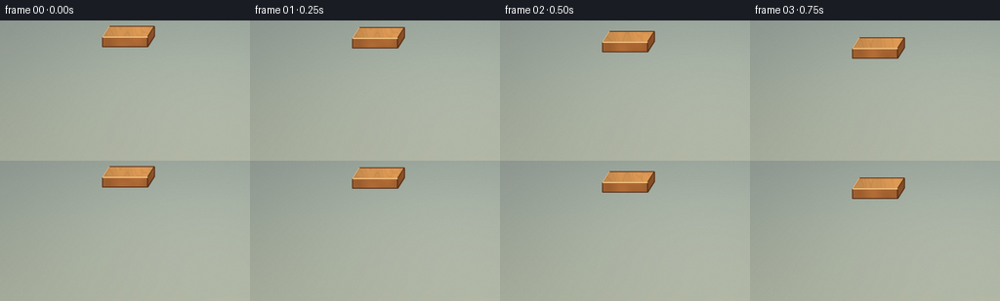
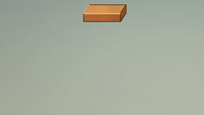
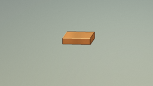
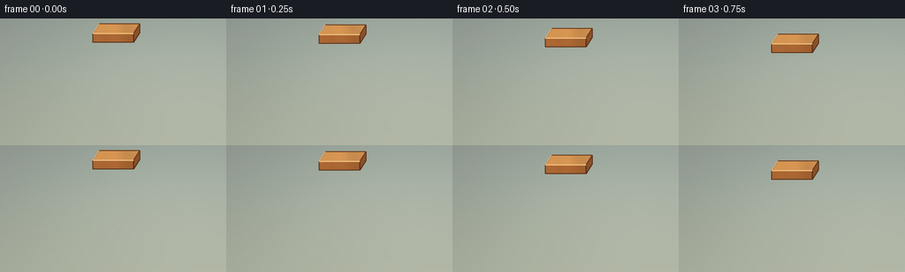
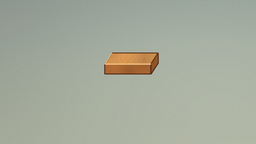

CODING AGENTS AS PIXEL WORLD MODELS
traex/DeepSeek-V4.1-Flash · phygen_009
点击播放 · 原生 RGB 像素
逐轮保存的候选
回放视频、检查图与代码变化。
每份候选均可单独播放。实际图片检查记录在下方工具轨迹中。
候选 01播放与检查图
点击播放 · 原生 RGB 像素

展开代码变化
--- 上一保存版本
+++ 本次保存版本
@@ -0,0 +1,358 @@
+from pathlib import Path
+import math
+
+import numpy as np
+from PIL import Image, ImageDraw, ImageFilter
+
+import artifact_io
+
+
+WIDTH = 256
+HEIGHT = 144
+FPS = 4.0
+FRAMES = 20
+SS = 4
+W = WIDTH * SS
+H = HEIGHT * SS
+
+
+def smoothstep(value):
+ value = np.clip(value, 0.0, 1.0)
+ return value * value * (3.0 - 2.0 * value)
+
+
+def ellipse_mask(cx, cy, rx, ry):
+ return (((X - cx) / rx) ** 2 + ((Y - cy) / ry) ** 2 <= 1.0).astype(np.float32)
+
+
+def polygon_mask(points):
+ image = Image.new("L", (W, H), 0)
+ ImageDraw.Draw(image).polygon([(float(x), float(y)) for x, y in points], fill=255)
+ return np.asarray(image, dtype=np.float32) / 255.0
+
+
+def blurred(mask, radius):
+ image = Image.fromarray(np.clip(mask * 255.0, 0, 255).astype(np.uint8), "L")
+ image = image.filter(ImageFilter.GaussianBlur(max(0.1, radius * SS)))
+ return np.asarray(image, dtype=np.float32) / 255.0
+
+
+def composite(base, color, alpha):
+ alpha = np.clip(alpha, 0.0, 1.0)[..., None]
+ return base * (1.0 - alpha) + color * alpha
+
+
+def scale_points(points):
+ return [(x * SS, y * SS) for x, y in points]
+
+
+def rotate_points(points, angle, pivot):
+ cos_a = math.cos(angle)
+ sin_a = math.sin(angle)
+ px, py = pivot
+ rotated = []
+ for x, y in points:
+ dx = x - px
+ dy = y - py
+ rotated.append((px + dx * cos_a - dy * sin_a, py + dx * sin_a + dy * cos_a))
+ return rotated
+
+
+def draw_outline(image, points, fill, width):
+ ImageDraw.Draw(image).line(
+ [(float(x), float(y)) for x, y in points] + [(float(points[0][0]), float(points[0][1]))],
+ fill=fill,
+ width=max(1, int(round(width * SS))),
+ joint="curve",
+ )
+
+
+def make_background():
+ y = Y / SS
+ x = X / SS
+ horizon = 45.0
+
+ wall_t = np.clip(y / horizon, 0.0, 1.0)
+ wall_rgb = np.stack(
+ (
+ 146.0 + 30.0 * wall_t,
+ 157.0 + 24.0 * wall_t,
+ 149.0 + 12.0 * wall_t,
+ ),
+ axis=-1,
+ )
+ window_glow = 23.0 * np.exp(-(((x - 48.0) / 48.0) ** 2 + ((y - 13.0) / 27.0) ** 2))
+ wall_rgb += window_glow[..., None] * np.array([0.9, 0.94, 0.82])
+
+ table_t = np.clip((y - horizon) / (HEIGHT - horizon), 0.0, 1.0)
+ grain = (
+ 0.65 * np.sin(0.115 * x + 0.26 * y + 0.85 * np.sin(0.028 * x - 0.055 * y))
+ + 0.35 * np.sin(0.37 * x + 0.09 * y + 1.8)
+ )
+ fine = 0.32 * np.sin(0.91 * x - 0.16 * y)
+ table_rgb = np.stack(
+ (
+ 121.0 + 17.0 * table_t,
+ 81.0 + 12.0 * table_t,
+ 54.0 + 7.0 * table_t,
+ ),
+ axis=-1,
+ )
+ table_rgb += (grain * 6.4 + fine * 2.4)[..., None] * np.array([1.0, 0.78, 0.55])
+ table_rgb += (12.0 * np.exp(-((x - 35.0) / 145.0) ** 2))[..., None] * np.array([0.8, 0.62, 0.42])
+
+ seam_phase = np.mod(y - 6.0, 31.0)
+ seam = np.exp(-((seam_phase - 0.5) / 0.62) ** 2)
+ table_rgb -= seam[..., None] * np.array([12.0, 9.0, 7.0])
+
+ blend = smoothstep((y - (horizon - 1.5)) / 3.0)[..., None]
+ canvas = wall_rgb * (1.0 - blend) + table_rgb * blend
+
+ vignette = 1.0 - 0.12 * (
+ ((x - WIDTH * 0.5) / (WIDTH * 0.72)) ** 2
+ + ((y - HEIGHT * 0.53) / (HEIGHT * 0.86)) ** 2
+ )
+ canvas *= np.clip(vignette, 0.78, 1.0)[..., None]
+ return canvas
+
+
+def make_bowl_base(canvas):
+ cx = 128.0 * SS
+ cy = 75.0 * SS
+ rx = 77.0 * SS
+ ry = 34.0 * SS
+ base_y = 122.0 * SS
+ x = X / SS
+ y = Y / SS
+
+ shadow = ellipse_mask(134.0 * SS, 120.0 * SS, 74.0 * SS, 11.0 * SS)
+ shadow = blurred(shadow, 7.5)
+ canvas = composite(canvas, np.zeros_like(canvas), shadow * 0.29)
+
+ contact = ellipse_mask(129.0 * SS, 121.0 * SS, 49.0 * SS, 6.0 * SS)
+ contact = blurred(contact, 3.0)
+ canvas = composite(canvas, np.array([31.0, 25.0, 22.0]), contact * 0.25)
+
+ t = np.clip((y - 75.0) / 47.0, 0.0, 1.0)
+ half_width = 77.0 * (1.0 - 0.37 * np.power(t, 1.18))
+ body = ((y >= 75.0) & (y <= 122.0) & (np.abs(x - 128.0) <= half_width)).astype(np.float32)
+ rim = ellipse_mask(cx, cy, rx, ry)
+ silhouette = np.maximum(body, rim)
+
+ xrel = (x - 128.0) / 77.0
+ local_t = np.clip((y - 75.0) / 47.0, 0.0, 1.0)
+ shade = (
+ 0.93
+ - 0.15 * xrel
+ + 0.06 * np.exp(-((xrel + 0.43) / 0.31) ** 2)
+ - 0.10 * local_t
+ - 0.10 * np.abs(xrel) ** 2
+ )
+ ceramic = np.array([229.0, 220.0, 199.0])
+ body_rgb = ceramic * np.clip(shade, 0.64, 1.05)[..., None]
+ body_rgb += (7.0 * np.exp(-((xrel + 0.37) / 0.18) ** 2) * np.exp(-((local_t - 0.23) / 0.22) ** 2))[..., None]
+ canvas = composite(canvas, body_rgb, silhouette)
+
+ band = silhouette * ((y >= 101.0) & (y <= 108.2)).astype(np.float32)
+ band_shade = 0.86 - 0.12 * xrel + 0.08 * np.exp(-((xrel + 0.42) / 0.25) ** 2)
+ band_rgb = np.array([43.0, 105.0, 107.0]) * band_shade[..., None]
+ canvas = composite(canvas, band_rgb, band * 0.95)
+
+ top_ring = np.maximum(rim - ellipse_mask(cx, 79.0 * SS, 67.0 * SS, 27.0 * SS), 0.0)
+ ring_rgb = np.array([239.0, 232.0, 214.0]) * np.clip(shade + 0.035, 0.69, 1.08)[..., None]
+ canvas = composite(canvas, ring_rgb, top_ring)
+
+ outer_edge = np.maximum(rim - ellipse_mask(cx, cy, rx - 2.2 * SS, ry - 2.0 * SS), 0.0)
+ canvas = composite(canvas, np.array([49.0, 70.0, 73.0]), outer_edge * 0.82)
+
+ u = (X - cx) / rx
+ v = (Y - cy) / ry
+ r = np.sqrt(u * u + v * v)
+ inner_lip = rim * ((r > 0.865) & (r <= 0.94)).astype(np.float32)
+ lip_rgb = np.array([49.0, 111.0, 113.0]) * np.clip(0.88 - 0.12 * xrel, 0.62, 1.05)[..., None]
+ canvas = composite(canvas, lip_rgb, inner_lip * 0.92)
+
+ front_glint = rim * ((r > 0.91) & (r < 0.965)).astype(np.float32)
+ front_glint *= np.clip((y / SS - 73.0) / 18.0, 0.0, 1.0)
+ canvas = composite(canvas, np.array([255.0, 248.0, 226.0]), front_glint * 0.35)
+ return canvas
+
+
+def make_water(canvas, t):
+ x = X / SS
+ y = Y / SS
+ cx = 128.0
+ cy = 79.0
+ rx = 67.0
+ ry = 27.0
+ water = ellipse_mask(cx * SS, cy * SS, rx * SS, ry * SS)
+ u = (x - cx) / rx
+ v = (y - cy) / ry
+ r = np.sqrt(u * u + v * v)
+ front = np.clip((v + 1.0) * 0.5, 0.0, 1.0)
+
+ deep = np.array([22.0, 73.0, 88.0])
+ bright = np.array([52.0, 139.0, 142.0])
+ water_rgb = deep[None, None, :] * (1.0 - front[..., None]) + bright[None, None, :] * front[..., None]
+
+ sky_reflection = np.exp(-(((u + 0.34) / 0.50) ** 2 + ((v + 0.46) / 0.54) ** 2))
+ water_rgb += sky_reflection[..., None] * np.array([30.0, 42.0, 37.0])
+
+ wave = (
+ 0.58 * np.sin(0.185 * x + 0.075 * y)
+ + 0.28 * np.sin(0.07 * x - 0.31 * y + 0.7)
+ + 0.18 * np.sin(0.43 * x + 0.14 * y + 1.2)
+ )
+ water_rgb += wave[..., None] * np.array([2.0, 3.2, 2.8])
+
+ edge_dark = np.exp(-((r - 0.88) / 0.13) ** 2)
+ water_rgb -= edge_dark[..., None] * np.array([12.0, 17.0, 17.0])
+
+ reflection = np.exp(-(((x - 128.0) / 27.0) ** 2 + ((y - 84.0) / 22.0) ** 2))
+ reflection *= np.clip((y - 73.0) / 20.0, 0.0, 1.0)
+ reflection *= 0.56 + 0.22 * np.sin(0.62 * y + 0.8 * np.sin(0.23 * x))
+ water_rgb += reflection[..., None] * np.array([54.0, 31.0, 10.0])
+
+ impact_t = max(0.0, t - 2.25)
+ if impact_t > 0.0:
+ d = np.sqrt(((x - 128.0) / 1.48) ** 2 + (y - 77.5) ** 2)
+ envelope = np.exp(-impact_t * 0.80) * np.exp(-(d / 51.0) ** 2)
+ ripple_a = np.sin(2.0 * math.pi * (d - 7.0 - 23.0 * impact_t) / 7.2)
+ ripple_b = 0.55 * np.sin(2.0 * math.pi * (d - 3.5 - 29.0 * impact_t) / 10.5 + 0.8)
+ ripple = (ripple_a + ripple_b) * envelope
+ water_rgb += ripple[..., None] * np.array([7.0, 13.0, 12.0])
+ crest = np.clip(ripple - 0.22, 0.0, 1.0)
+ water_rgb += crest[..., None] * np.array([17.0, 22.0, 17.0])
+
+ canvas = composite(canvas, water_rgb, water)
+
+ # A soft, broad sheen gives the low-resolution water plane a clean specular read.
+ sheen = np.exp(-(((x - 105.0) / 20.0) ** 2 + ((y - 69.0) / 5.0) ** 2))
+ sheen *= water * np.clip((1.0 - r) * 6.0, 0.0, 1.0)
+ canvas += sheen[..., None] * np.array([45.0, 53.0, 42.0])
+ return canvas
+
+
+def block_geometry(center_x, front_y, angle):
+ top = [
+ (center_x - 23.0, front_y),
+ (center_x + 23.0, front_y),
+ (center_x + 30.0, front_y - 11.0),
+ (center_x - 16.0, front_y - 11.0),
+ ]
+ top = rotate_points(top, angle, (center_x, front_y - 5.0))
+ front = [top[0], top[1], (top[1][0], top[1][1] + 10.0), (top[0][0], top[0][1] + 10.0)]
+ right = [top[1], top[2], (top[2][0], top[2][1] + 10.0), (top[1][0], top[1][1] + 10.0)]
+ return top, front, right
+
+
+def make_block(canvas, t):
+ x = X / SS
+ y = Y / SS
+ descent = min(1.0, t / 2.25)
+ eased = 0.5 - 0.5 * math.cos(math.pi * descent)
+ front_y = 17.0 + 47.0 * eased
+
+ if t > 2.25:
+ settle_t = t - 2.25
+ front_y += 1.15 * math.exp(-settle_t * 2.0) * math.sin(settle_t * 10.5)
+ angle = math.radians(1.7) * math.exp(-settle_t * 2.3) * math.sin(settle_t * 7.6)
+ else:
+ angle = 0.0
+
+ top, front, right = block_geometry(128.0, front_y, angle)
+
+ # Contact shadow on the water, fixed in space while the block descends.
+ shadow_alpha = 0.07 + 0.17 * eased
+ shadow = ellipse_mask(132.0 * SS, 78.0 * SS, 25.0 * SS, 7.0 * SS)
+ shadow = blurred(shadow, 4.5 - 2.1 * eased)
+ water = ellipse_mask(128.0 * SS, 79.0 * SS, 67.0 * SS, 27.0 * SS)
+ canvas = composite(canvas, np.array([18.0, 43.0, 47.0]), shadow * water * shadow_alpha)
+
+ grain = (
+ 0.66 * np.sin(0.47 * x + 0.10 * y + 0.85 * np.sin(0.085 * x + 0.24 * y))
+ + 0.34 * np.sin(0.98 * x - 0.19 * y + 1.6)
+ )
+ top_mask = polygon_mask(scale_points(top))
+ front_mask = polygon_mask(scale_points(front))
+ right_mask = polygon_mask(scale_points(right))
+
+ right_rgb = np.array([137.0, 78.0, 37.0]) + grain[..., None] * np.array([6.0, 4.0, 2.0])
+ front_rgb = np.array([160.0, 94.0, 45.0]) + grain[..., None] * np.array([8.0, 5.0, 2.5])
+ top_rgb = np.array([207.0, 141.0, 76.0]) + grain[..., None] * np.array([12.0, 8.0, 4.0])
+
+ top_light = np.exp(-(((x - 111.0) / 22.0) ** 2 + ((y - (front_y - 7.0)) / 8.0) ** 2))
+ top_rgb += top_light[..., None] * np.array([20.0, 17.0, 11.0])
+ front_rgb *= np.clip(0.90 + (front_y + 10.0 - y) / 70.0, 0.78, 1.02)[..., None]
+
+ canvas = composite(canvas, right_rgb, right_mask)
+ canvas = composite(canvas, front_rgb, front_mask)
+ canvas = composite(canvas, top_rgb, top_mask)
+
+ image = Image.fromarray(np.clip(canvas, 0, 255).astype(np.uint8), "RGB")
+ draw_outline(image, scale_points(right), (81, 43, 22), 1.0)
+ draw_outline(image, scale_points(front), (82, 44, 22), 1.05)
+ draw_outline(image, scale_points(top), (95, 52, 26), 1.1)
+
+ top_front_left = (top[0][0] * SS, top[0][1] * SS)
+ top_front_right = (top[1][0] * SS, top[1][1] * SS)
+ ImageDraw.Draw(image).line(
+ [top_front_left, top_front_right],
+ fill=(240, 190, 122),
+ width=max(1, int(1.4 * SS)),
+ )
+ ImageDraw.Draw(image).line(
+ [(top[3][0] * SS, top[3][1] * SS), (top[0][0] * SS, top[0][1] * SS)],
+ fill=(234, 177, 107),
+ width=max(1, int(0.85 * SS)),
+ )
+ canvas = np.asarray(image, dtype=np.float32)
+
+ # A cool waterline glint grounds the floating block against the water.
+ if eased > 0.92:
+ waterline = ellipse_mask(128.0 * SS, (front_y + 10.3) * SS, 24.0 * SS, 2.0 * SS)
+ waterline = blurred(waterline, 1.0)
+ canvas = composite(canvas, np.array([126.0, 184.0, 171.0]), waterline * 0.22)
+ return canvas
+
+
+def finish(canvas):
+ x = X / SS
+ y = Y / SS
+ # Gentle highlight rolloff and restrained grain.
+ canvas = np.clip(canvas, 0.0, 255.0)
+ canvas = canvas / 255.0
+ canvas = np.power(canvas, 0.94)
+ canvas = np.clip(canvas * 255.0, 0.0, 255.0)
+
+ image = Image.fromarray(canvas.astype(np.uint8), "RGB")
+ image = image.resize((WIDTH, HEIGHT), Image.Resampling.LANCZOS)
+ frame = np.asarray(image, dtype=np.float32)
+
+ rng = np.random.default_rng(1909)
+ noise = rng.normal(0.0, 0.62, (HEIGHT, WIDTH, 1))
+ frame = np.clip(frame + noise, 0.0, 255.0)
+ return frame.astype(np.uint8)
+
+
+def render():
+ background = make_background()
+ bowl = make_bowl_base(background.copy())
+ frames = []
+ for index in range(FRAMES):
+ t = index / FPS
+ canvas = make_water(bowl.copy(), t)
+ canvas = make_block(canvas, t)
+ frames.append(finish(canvas))
+ return np.stack(frames, axis=0)
+
+
+if __name__ == "__main__":
+ X, Y = np.meshgrid(
+ (np.arange(W, dtype=np.float32) + 0.5) / SS,
+ (np.arange(H, dtype=np.float32) + 0.5) / SS,
+ )
+ case_dir = Path(__file__).resolve().parent
+ frames = render()
+ artifact_io.save(frames, case_dir)
+ print(f"wrote {frames.shape[0]} frames to {case_dir}")
候选 02播放与检查图
点击播放 · 原生 RGB 像素


展开代码变化
--- 上一保存版本
+++ 本次保存版本
@@ -32,7 +32,7 @@
def blurred(mask, radius):
- image = Image.fromarray(np.clip(mask * 255.0, 0, 255).astype(np.uint8), "L")
+ image = Image.fromarray(np.clip(mask * 255.0, 0, 255).astype(np.uint8))
image = image.filter(ImageFilter.GaussianBlur(max(0.1, radius * SS)))
return np.asarray(image, dtype=np.float32) / 255.0
@@ -217,12 +217,12 @@
if impact_t > 0.0:
d = np.sqrt(((x - 128.0) / 1.48) ** 2 + (y - 77.5) ** 2)
envelope = np.exp(-impact_t * 0.80) * np.exp(-(d / 51.0) ** 2)
- ripple_a = np.sin(2.0 * math.pi * (d - 7.0 - 23.0 * impact_t) / 7.2)
- ripple_b = 0.55 * np.sin(2.0 * math.pi * (d - 3.5 - 29.0 * impact_t) / 10.5 + 0.8)
+ ripple_a = np.sin(2.0 * math.pi * (d - 6.0 - 24.0 * impact_t) / 7.8)
+ ripple_b = 0.62 * np.sin(2.0 * math.pi * (d - 3.0 - 30.0 * impact_t) / 11.5 + 0.8)
ripple = (ripple_a + ripple_b) * envelope
- water_rgb += ripple[..., None] * np.array([7.0, 13.0, 12.0])
+ water_rgb += ripple[..., None] * np.array([10.0, 18.0, 16.0])
crest = np.clip(ripple - 0.22, 0.0, 1.0)
- water_rgb += crest[..., None] * np.array([17.0, 22.0, 17.0])
+ water_rgb += crest[..., None] * np.array([22.0, 27.0, 20.0])
canvas = composite(canvas, water_rgb, water)
@@ -269,17 +269,24 @@
water = ellipse_mask(128.0 * SS, 79.0 * SS, 67.0 * SS, 27.0 * SS)
canvas = composite(canvas, np.array([18.0, 43.0, 47.0]), shadow * water * shadow_alpha)
- grain = (
- 0.66 * np.sin(0.47 * x + 0.10 * y + 0.85 * np.sin(0.085 * x + 0.24 * y))
- + 0.34 * np.sin(0.98 * x - 0.19 * y + 1.6)
+ top_grain = (
+ 0.62 * np.sin(0.39 * x + 0.13 * y + 1.05 * np.sin(0.061 * x + 0.34 * y))
+ + 0.25 * np.sin(0.87 * x - 0.20 * y + 1.6)
+ + 0.13 * np.sin(1.67 * x + 0.08 * y)
+ )
+ side_grain = (
+ 0.67 * np.sin(0.54 * x + 0.34 * y + 0.65 * np.sin(0.12 * x - 0.37 * y))
+ + 0.33 * np.sin(1.13 * x - 0.43 * y + 1.2)
)
top_mask = polygon_mask(scale_points(top))
front_mask = polygon_mask(scale_points(front))
right_mask = polygon_mask(scale_points(right))
- right_rgb = np.array([137.0, 78.0, 37.0]) + grain[..., None] * np.array([6.0, 4.0, 2.0])
- front_rgb = np.array([160.0, 94.0, 45.0]) + grain[..., None] * np.array([8.0, 5.0, 2.5])
- top_rgb = np.array([207.0, 141.0, 76.0]) + grain[..., None] * np.array([12.0, 8.0, 4.0])
+ right_rgb = np.array([137.0, 78.0, 37.0]) + side_grain[..., None] * np.array([9.0, 6.0, 3.0])
+ front_rgb = np.array([160.0, 94.0, 45.0]) + side_grain[..., None] * np.array([12.0, 8.0, 3.5])
+ top_rgb = np.array([207.0, 141.0, 76.0]) + top_grain[..., None] * np.array([18.0, 12.0, 5.5])
+ growth_ring = np.exp(-((np.mod(top_grain * 3.1 + 0.38, 1.0) - 0.5) / 0.075) ** 2)
+ top_rgb -= growth_ring[..., None] * np.array([12.0, 9.0, 5.0])
top_light = np.exp(-(((x - 111.0) / 22.0) ** 2 + ((y - (front_y - 7.0)) / 8.0) ** 2))
top_rgb += top_light[..., None] * np.array([20.0, 17.0, 11.0])
@@ -289,7 +296,7 @@
canvas = composite(canvas, front_rgb, front_mask)
canvas = composite(canvas, top_rgb, top_mask)
- image = Image.fromarray(np.clip(canvas, 0, 255).astype(np.uint8), "RGB")
+ image = Image.fromarray(np.clip(canvas, 0, 255).astype(np.uint8))
draw_outline(image, scale_points(right), (81, 43, 22), 1.0)
draw_outline(image, scale_points(front), (82, 44, 22), 1.05)
draw_outline(image, scale_points(top), (95, 52, 26), 1.1)
@@ -312,7 +319,10 @@
if eased > 0.92:
waterline = ellipse_mask(128.0 * SS, (front_y + 10.3) * SS, 24.0 * SS, 2.0 * SS)
waterline = blurred(waterline, 1.0)
- canvas = composite(canvas, np.array([126.0, 184.0, 171.0]), waterline * 0.22)
+ canvas = composite(canvas, np.array([139.0, 196.0, 179.0]), waterline * 0.32)
+ front_wet = ellipse_mask(128.0 * SS, (front_y + 9.3) * SS, 21.5 * SS, 1.1 * SS)
+ front_wet = blurred(front_wet, 0.75)
+ canvas = composite(canvas, np.array([58.0, 119.0, 112.0]), front_wet * 0.28)
return canvas
@@ -325,7 +335,7 @@
canvas = np.power(canvas, 0.94)
canvas = np.clip(canvas * 255.0, 0.0, 255.0)
- image = Image.fromarray(canvas.astype(np.uint8), "RGB")
+ image = Image.fromarray(canvas.astype(np.uint8))
image = image.resize((WIDTH, HEIGHT), Image.Resampling.LANCZOS)
frame = np.asarray(image, dtype=np.float32)
可观测工具轨迹
实际执行的命令与返回图片。
命令 1exit 0
/bin/bash -c "pwd && rg --files -g 'prompt.txt' -g 'GENERATION_RULES.md' -g 'task_spec.json' -g '"'!node_modules'"'"
命令 2exit 0
/bin/bash -c "find . -maxdepth 2 -type f -printf '%p\\n' | sort | head -200"
命令 3exit 0
/bin/bash -c 'cat prompt.txt'
命令 4exit 0
/bin/bash -c 'cat GENERATION_RULES.md'
命令 5exit 0
/bin/bash -c 'cat task_spec.json'
命令 6exit 0
/bin/bash -c "sed -n '1,260p' artifact_io.py"
命令 7exit 0
/bin/bash -c 'python generate.py'
命令 8exit 0
/bin/bash -c "nl -ba generate.py | sed -n '25,50p;190,340p'"
命令 9exit 0
/bin/bash -c 'python generate.py'
命令 10exit 0
/bin/bash -c "python - <<'PY'
import json
from pathlib import Path
import numpy as np
from PIL import Image
spec=json.loads(Path('task_spec.json').read_text())
p=np.load('pixels.npz')['pixels']
print('tensor', p.shape, p.dtype)
print('frames', len(list(Path('frames').glob('*.png'))))
print('frame size', Image.open('frames/00.png').size)
print('pixel range', int(p.min()), int(p.max()))
print('frame differences', [int(np.count_nonzero(p[:,:,i] "'!= p[:,:,i-1])) for i in range(1, p.shape[2])])
print('"'index bytes', Path('index.html').stat().st_size)
PY"视觉工具实际返回图片 1

视觉工具实际返回图片 2

视觉工具实际返回图片 3

视觉工具实际返回图片 4
视觉工具实际返回图片 5

视觉工具实际返回图片 6

视觉工具实际返回图片 7

保存候选 2 份；完成命令 10 次；可验证图片返回 7 张。原始 API 响应与完整日志保留在本地。